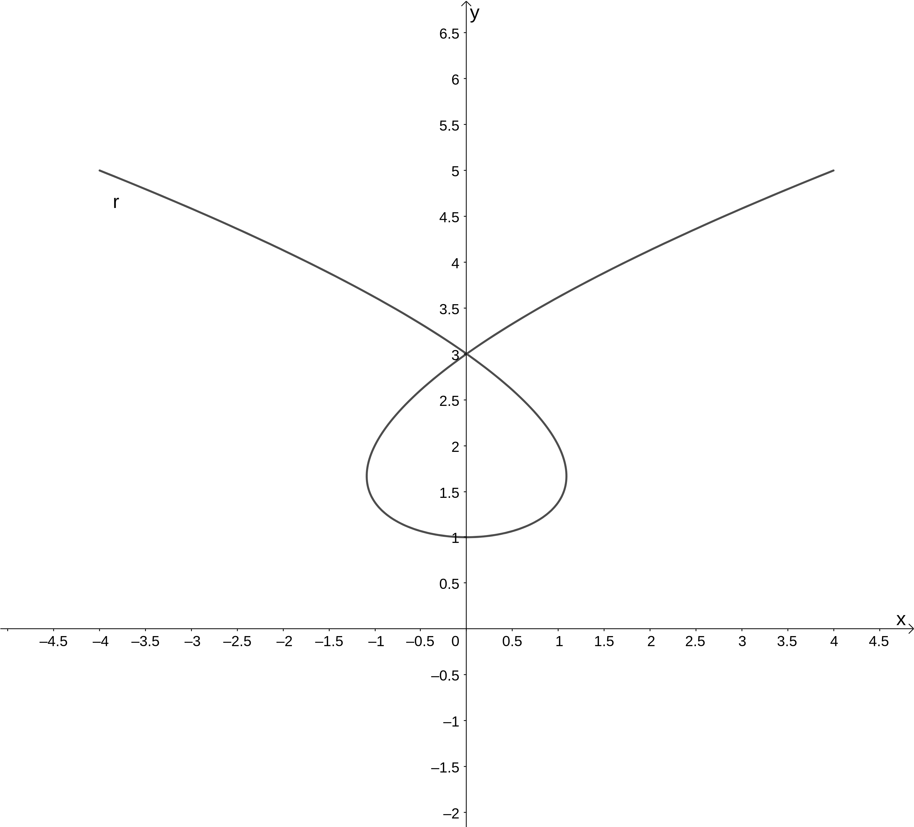

Oppgaveløsninger
Innhold
Del 2 - Oppgave 5
a
Tegner grafen i Geogebra ved å bruke r = Kurve(t^3 - 2t, t^2 + 1, t, -2, 2). Vi får da en figur som ser ut som følger.

b
Finner fartsvektoren ved å derivere posisjonsvektoren med hensyn på tiden, og får dermed \[\vec{r}'(t) = \vec{v}(t) = \left[ 3t^2-2, 2t],\quad t\in \mathbb{R}.\] Fartsvektoren ved \(t=-1\) er da \(\vec{v}(-1) = \left[1, -2\right]\). Vi finner banefarten ved å ta absoluttverdien av denne \(|\vec{v}(-1)|=\sqrt{1^2 + (-2)^2} = \sqrt{5}\). Vi kan tegne denne fra punktet gitt av \(\vec{r}(1)\) ved å bruke kommandoen Vektor og angi start- og sluttpunkt, altså v_1 = Vektor(r(1), r(1) + r'(1)) (merk at vi her finner fartsvektoren ved å derivere posisjonsvektoren direkte i uttrykket).
c
Dette kan løses i CAS som vist under. Her har vi først definert fartsvektoren som en funksjon av tiden (vi kunne også funnet denne via å derivere posisjonsvektoren), før vi løser likningen \[|\vec{v}(t)|=2\] ved å bruke Løs-kommandoen og gi t som variabel til denne.

Som vi ser av figuren over er banefarten til partikkelen lik 2 når \[t = -2\cdot\frac{\sqrt{2}}{3}\vee t=0\vee t=2\cdot\frac{\sqrt{2}}{3}\]
d
Banefarten til partikkelens ekstremalverdier kan vi finne ved å lage en ny funksjon for banefarten til partikkelen, som da er absoluttverdien til fartsvektoren, dette gjør vi i celle 3 i figuren under.
Banefarten har altså ekstremalverdier for \(t=-\frac{2}{3}\vee t=0\vee t=\frac{2}{3}\) (\(y\) -verdiene til disse punktene, som vist i celle 4 gir oss partikkelens fart, siden dette er funksjonsverdiene til banefartfunksjonen vår).
For å vise at dette samsvarer med tidspunktene partikkelens farts- og akselerasjonsvektor står vinkelrett på hverandre, kan vi forsøke å løse likningen \(\vec{v}'(t) \cdot \vec{v}(t) = 0\), siden akselerasjonsvektoren er den deriverte av fartsvektoren. Som vist i celle 5 under, får vi da de samme \(t\) -verdiene som ekstremalpunktene til banefarten.
Vi har da vist det oppgavenber oss om å vise.